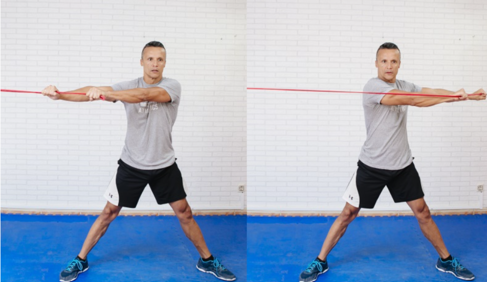
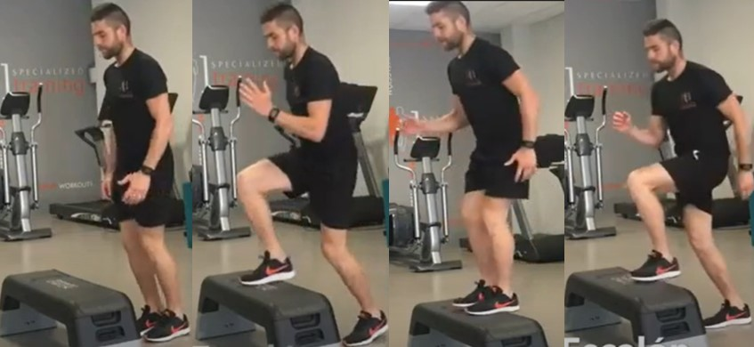
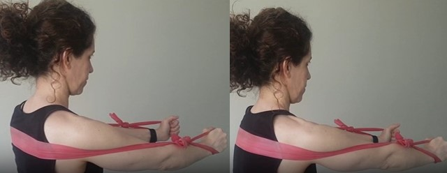
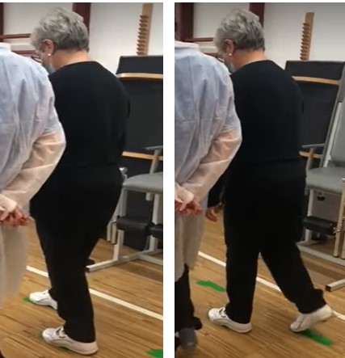

Rotación de tronco con banda elástica

- Colocar piernas en posición exageradamente abierta y con las rodillas extendidas para evitar cualquier ayuda de tu tren inferior (puede ser en silla)
- Tomar la banda a la altura del pecho y con tus dos manos separadas a la anchura de tus hombros, se puede hacer con las palmas de las manos juntas tomando la banda
- Rotar brazos por delante de tu cuerpo hasta llegar al máximo de movilidad.
- Asegúrate de evitar cualquier movimiento en tu cintura, caderas y espalda baja y mira siempre al frente.
- 3 series de 10 repeticiones por lado
Video ejemplo
Subir y bajar escalón

- De pie y en posición erguida al frente de escalón
- Subir y bajar con pierna derecha o izquierda, luego con pierna contraria a la anterior (intercalar)
- 3 series de 10 repeticiones
- Extra: Se puede usar peso extra en brazos (mancuernas, muñequeras o tobilleras, bolsas de arroz, etc).
- Si usa peso extra en brazos, al momento de subir elevar brazos por sobre la cabeza y bajarlos al momento de bajar escalón
Video ejemplo
Protracción y retracción escapular con banda

- Realizar este ejercicio hasta dominar ejercicio de "abrazo" con banda elástica
- Se puede estar de pie o sentado, pasando banda elástica por espalda a la altura de escápulas
- Tomar cada extremo de la banda con las manos y con codos estirados
- Empujar extremos de las bandas haciendo el movimiento con los hombros
- 3 series de 10 repeticiones
Video ejemploEjercicio 6
Entrenamiento Marcha

- Marcar zancadas con conos u objetos que no puedan provocar caidas (6 metros aprox)
- Al dar pasos, preocuparse de apoyar primero talón, planta de pie y dedos
- 3 series de 10 caminatas (ida y vuelta)
Video ejemplo